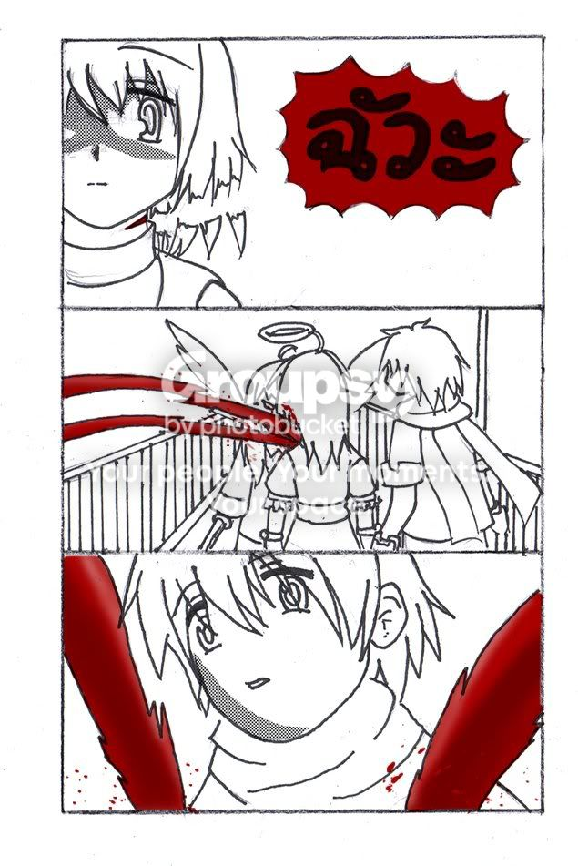
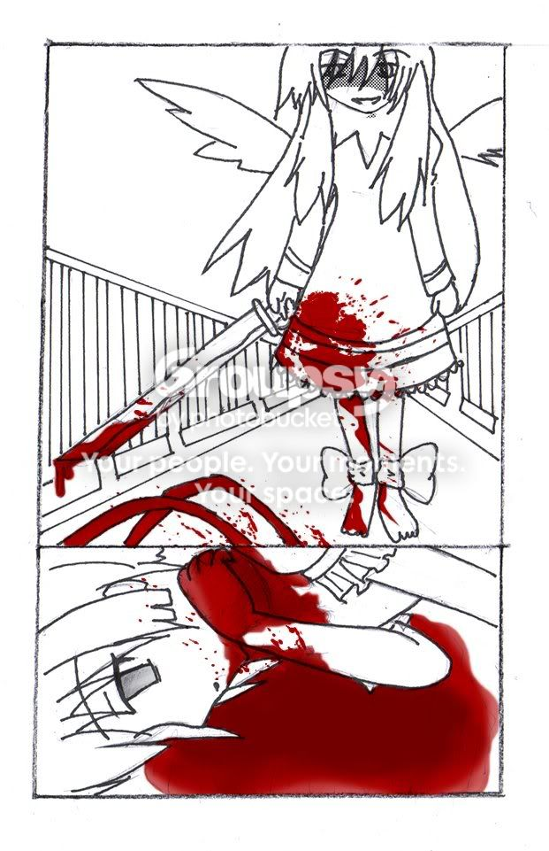

ตอนจบของ ECO [Bad Ending]
เรื่องราวของ ECO ในส่วนหลักนั้นคือการผจญภัยของเหล่า NPC ทั้ง 6 ซึ่งได้แก่ Emi Masha Tita Titus Berial Ruruie

ถ้าลองคิดว่าตอนจบแบบนี้....
Emil ได้ช่วยชีวิต Tita ไว้ จนตัวเองต้องตาย Tita นั้นรัก Emil มากจึงใช้เวทมนต์ชุบชีวิต Emil ขึ้นมา ทว่าไม่มีเวทมนต์ใดที่จะชุบคนตายให้สำเร็จได้อย่างสมบูรณ์แบบ Emil ที่ฟื้นขึ้นจากความตายจึงต้องสูญเสียความทรงจำก่อนหน้านั้น และ Tita นั้นต้องสละพลังชีวิตของตนในการใช้เวทมนต์ครั้งนี้..จนในที่สุดดวงจิตของเธอจึงต้องแตกสลายไป....
ส่วนทางด้าน Emil หลังจากที่สูญเสียความทรงจำไปก็ได้ไปอาศัยอยู่กับ Masha ซึ่งเป็นเพื่อนสมัยเด็กของเขาและ Masha เองก็ได้คอยดูแลและช่วยเหลือเขาทุกอย่างจนกระทั่งเกิดความผูกพันทางจิตใจระหว่างเธอกับเขาโดยไม่รู้ตัว จนในที่สุด Masha จึงได้ลงเอยกับ Emil ....
ต่อมา.......
Titus พี่ชายของ Tita ก็สามารถรักษา Tita ได้และสามารถทำให้เธอกลับมามีชีวิตจิตใจแบบเดิมได้อีกครั้ง ตอนนั้นเองที่เธอตัดสินใจจะกลับไปหา Emil เพื่อที่จะสารภาพรักกับเขาให้ชัดเจน แต่พอไปถึงกลับพบว่า.....Emil กับ Masha ได้คบกันแล้ว และพอเธอจะเล่าความจริงว่าตัวเธอเองเป็นคนช่วย Emil ไว้ เขากลับพูดออกมาว่าจำไม่ได้...ใจของ Tita แตกสลายลงอีกครั้ง แต่เธอก็ไม่อาจจะตัดใจจาก Emil ได้ จนในที่สุดความโกรธแค้นที่มีต่อ Masha ที่แย่ง Emil ไปก็มีมากขึ้นจนกระทั่งเธอตัดสินใจ....
Ending...

Credit...
~Zabertus~
Aofkung
Kaku
Husky_Wisky
ข้อมูลที่เหลืออ่านเอาที่
http://board.onenet.co.th/viewtopic.php?t=46408
ถ้าลองคิดว่าตอนจบแบบนี้....
Emil ได้ช่วยชีวิต Tita ไว้ จนตัวเองต้องตาย Tita นั้นรัก Emil มากจึงใช้เวทมนต์ชุบชีวิต Emil ขึ้นมา ทว่าไม่มีเวทมนต์ใดที่จะชุบคนตายให้สำเร็จได้อย่างสมบูรณ์แบบ Emil ที่ฟื้นขึ้นจากความตายจึงต้องสูญเสียความทรงจำก่อนหน้านั้น และ Tita นั้นต้องสละพลังชีวิตของตนในการใช้เวทมนต์ครั้งนี้..จนในที่สุดดวงจิตของเธอจึงต้องแตกสลายไป....
ส่วนทางด้าน Emil หลังจากที่สูญเสียความทรงจำไปก็ได้ไปอาศัยอยู่กับ Masha ซึ่งเป็นเพื่อนสมัยเด็กของเขาและ Masha เองก็ได้คอยดูแลและช่วยเหลือเขาทุกอย่างจนกระทั่งเกิดความผูกพันทางจิตใจระหว่างเธอกับเขาโดยไม่รู้ตัว จนในที่สุด Masha จึงได้ลงเอยกับ Emil ....
ต่อมา.......
Titus พี่ชายของ Tita ก็สามารถรักษา Tita ได้และสามารถทำให้เธอกลับมามีชีวิตจิตใจแบบเดิมได้อีกครั้ง ตอนนั้นเองที่เธอตัดสินใจจะกลับไปหา Emil เพื่อที่จะสารภาพรักกับเขาให้ชัดเจน แต่พอไปถึงกลับพบว่า.....Emil กับ Masha ได้คบกันแล้ว และพอเธอจะเล่าความจริงว่าตัวเธอเองเป็นคนช่วย Emil ไว้ เขากลับพูดออกมาว่าจำไม่ได้...ใจของ Tita แตกสลายลงอีกครั้ง แต่เธอก็ไม่อาจจะตัดใจจาก Emil ได้ จนในที่สุดความโกรธแค้นที่มีต่อ Masha ที่แย่ง Emil ไปก็มีมากขึ้นจนกระทั่งเธอตัดสินใจ....




Ending...
Credit...
~Zabertus~
Aofkung
Kaku
Husky_Wisky